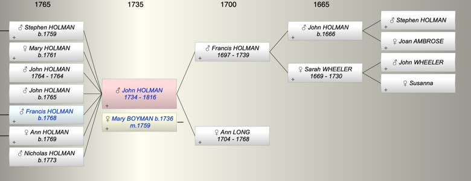

| [Index] |
| John HOLMAN (1734 - 1816) |
| Master Mariner |
|  |
| b. 1734 at St Laurence |
| m. 13 Feb 1759 Mary BOYMAN (1736 - ) at St Laurence |
| d. 1816 at St Laurence aged 82 |
| Parents: |
| Francis HOLMAN (1697 - 1739) |
| Ann LONG (1704 - 1768) |
| Siblings (5): |
| Ann HOLMAN (1726 - ) |
| Francis HOLMAN (1729 - 1784) |
| William HOLMAN (1731 - ) |
| Sarah HOLMAN (1736 - 1795) |
| Nicholas HOLMAN (1739 - 1775) |
| Children (7): |
| Stephen HOLMAN (1759 - ) |
| Mary HOLMAN (1761 - ) |
| John HOLMAN (1764 - 1764) |
| John Cooper HOLMAN (1765 - ) |
| Francis HOLMAN (1768 - ) |
| Ann HOLMAN (1769 - ) |
| Nicholas HOLMAN (1773 - ) |
| Grandchildren (8): |
| Stephen HOLMAN (1785 - ), Jane (1789 - ), Mary Ann HOLMAN ( - 1824), Elizabeth HOLMAN (1799 - ), Francis BROWN, Robert BROWN, Thomas BROWN, Stephen BROWN (1799 - ) |
| Events in John HOLMAN (1734 - 1816)'s life | |||||
| Date | Age | Event | Place | Notes | Src |
| 1734 | John HOLMAN was born | St Laurence | Note 1 | ||
| 1739 | 5 | Death of father Francis HOLMAN (aged 42) | 22 Jan 1730 | ||
| 1759 | 25 | Birth of son Stephen HOLMAN | St Laurence | Note 2 | |
| 13 Feb 1759 | 25 | Married Mary BOYMAN (aged 23) | St Laurence | ||
| 1761 | 27 | Birth of daughter Mary HOLMAN | St Laurence | Note 3 | |
| 1764 | 30 | Birth of son John HOLMAN | St Laurence | Note 4 | |
| 1764 | 30 | Death of son John HOLMAN | St Laurence | Note 5 | |
| 1765 | 31 | Birth of son John Cooper HOLMAN | St Laurence | Note 6 | |
| 1768 | 34 | Birth of son Francis HOLMAN | St Laurence | Note 7 | |
| 1768 | 34 | Death of mother Ann LONG (aged 64) | |||
| 1769 | 35 | Birth of daughter Ann HOLMAN | St Laurence | Note 8 | |
| 1773 | 39 | Birth of son Nicholas HOLMAN | St Laurence | Note 9 | |
| 1816 | 82 | John HOLMAN died | St Laurence | Note 10 | |
| Personal Notes: |
|
Should baptism be December? (X)
His will (ex Ancestry) John Holman, gentleman, formerly master mariner, proved 19 Sep 1816 refers to - John Curling, wine merchant, of Ramsgate, grandson Stephen Holman of Ramsgate (son of his late son Stephen) both executors, granddaughter Jane Holman, sons of his late daughter Ann Brown viz Stephen, Thomas and Robert Brown. - his granddaughters Mary Ann and Elizabeth Holman daughters of his late son Francis, - ten Guineas apiece unto the said John Curling and Stephen Holman as a small return to them for the trouble they may have in the execution of the trusts - eighth part part of residue to my granddaughter Jane Holman daughter of my late son Stephen eighth part part of residue to my granddson Stephen son of my late son Stephen remaining 6 eights to purchase an annuity of John Curling and Stephen Holman a third part of the annuity for the four grandchildren sons of his late daughter Ann Brown namely Stephen Thomas Robert and ffrancis Brown when 21 his daughter Mary Barge, widow granddaughter Mary Ann Holman and Elizabeth Holman witnesses Hum(phre)y Wightwick, Ramsgate John Savage and John France John Curling may have been the brother of Mary Curling who married John Holman's son Francis Referred to in his sister in law’s will (ie Jane Maxted) |
| Created on a Mac™ using iFamily for Mac™ on 8 Oct 2023 |